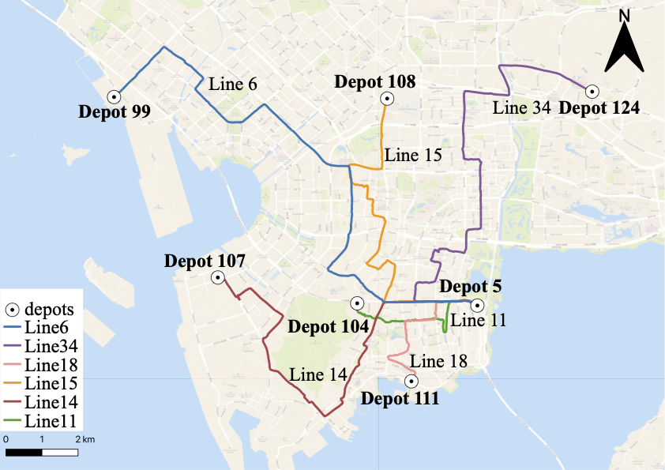
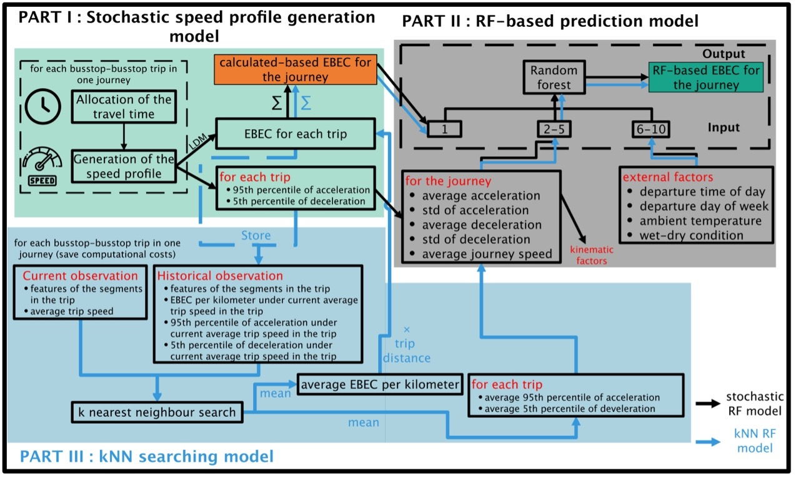
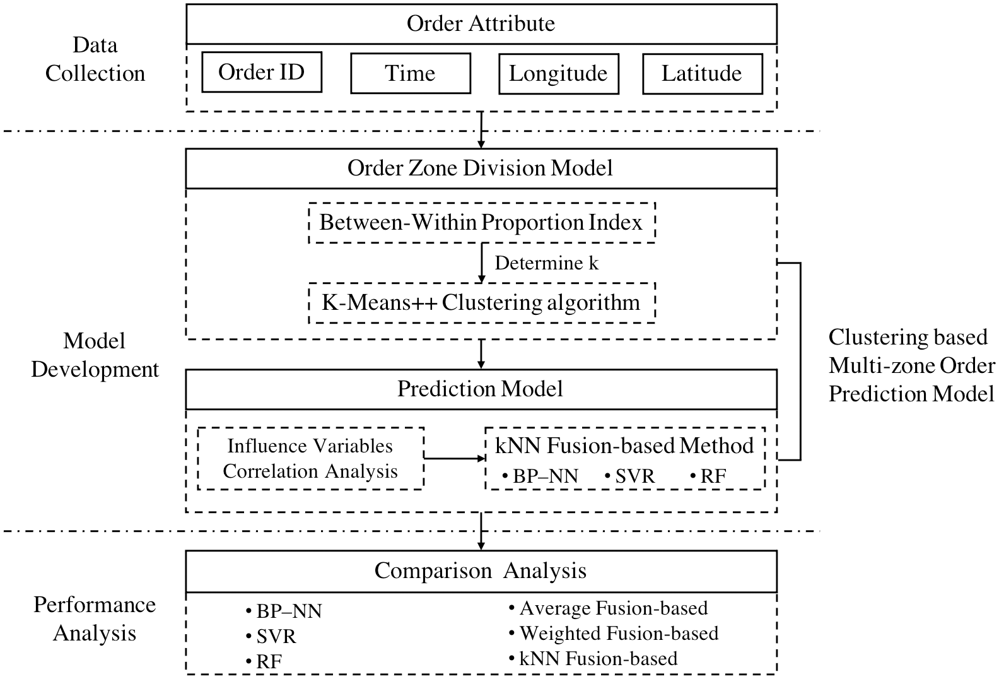
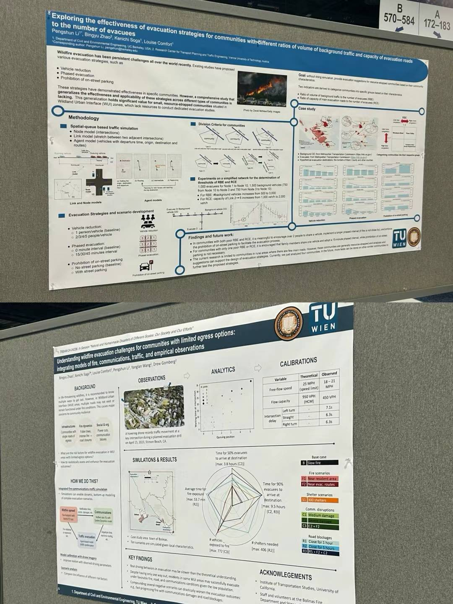
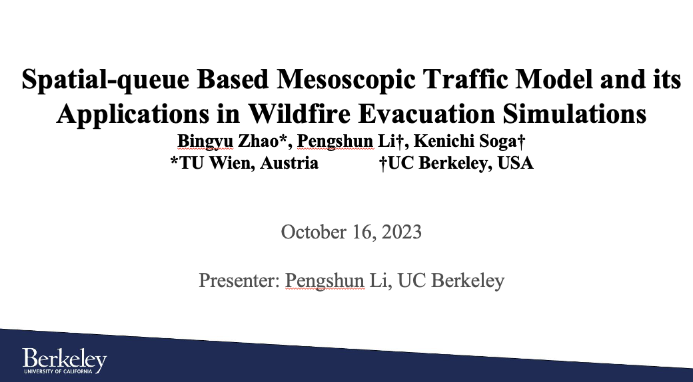

Pengshun Li
Davis Hall, Room 445
About Me
I’m a Ph.D. student with systems engineering at University of California, Berkeley, working under the mentorship of Prof. Kenichi Soga. My research involves analyzing disaster resilience, with a specific focus on designing wildfire evacuation strategies for various types of communities situated in the Wildland-Urban Interface (WUI) and identifying critical bridges for earthquake resilience by conducting a comprehensive assessment that considers both seismic vulnerability and the importance of each bridge within the traffic network
Research Interests
- Disaster Resilience: wildfire evacuation, urban resilience
- Electric Vehicle: energy consumption prediction, charging optimization
Education
- Ph.D. student, Systems Engineering, Univeristy of California, Berkeley
- GPA: 4.0/4.0
- Supervised by Prof. Kenichi Soga
- M.S., Control Science and Engineering, Tsinghua University, 2019-2022
- B.S., Transportation Engineering, Central South University, 2015-2019
- GPA: 91.62/100 (Rank 1/130)
- Award: Top 1 prize scholarship, Outstanding Graduate of Hunan Province
Publications
-
 TRR
Transportation Research Record (IF=1.7, Q4), Feb. 2024.
TRR
Transportation Research Record (IF=1.7, Q4), Feb. 2024. -
 IEEE TITSIEEE Transactions on Intelligent Transportation Systems (IF=8.5, Q1), Feb. 2023.
-
 Applied EnergyApplied Energy (IF=11.446, Q1), June. 2021.
-
 Energy
Energy
-
 Plos OnePlos One (IF=3.752, Q2), Mar. 2021.
-
 TRBTransportation Research Board Annual Meeting, Washington DC, Jan. 2024.
-
 InformsSpatial-queue Based Mesoscopic Traffic Model and its Applications in Wildfire Evacuation SimulationsInforms, Phoenix, Oct. 2023.
Journals
Conferences
Service
- Reviewer for TRB Annual Meeting-2025
- Reviewer for World Transport Convention-2024 (WTC)